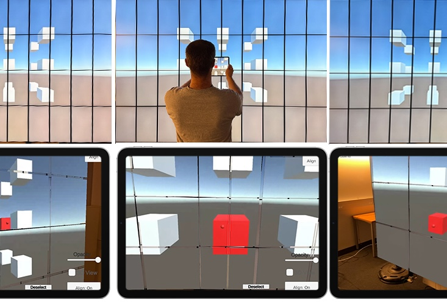
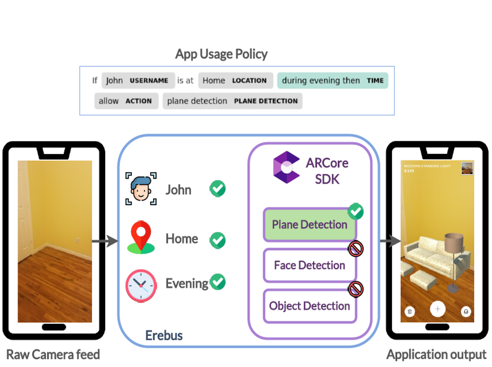

Hello! I am a sixth year PhD at Stony Brook University (New York) in Visualization Lab under the Center for Visual Computing, advised by Dr. Arie E. Kaufman.
My research focuses on how data is intelligently adapted across realities -- Physicality and Virtuality (VR, AR, MR HMD, Mobile, Tiled Display, PC), aiming to design a personalized, context-aware XR interface that "understands" users, environments, and tasks, enabling the adaptation of visualization and interaction.
I leverage multimodal AI that integrates speech, gestures, and visuospatial cues, to support (1) personalized information adaptation and (2) fluid user collaboration across realities. I also explore (3) security and privacy in ubiquitous, everyday XR.
I see myself as a "systems" applied researcher who likes to propose next-generation concepts of XR (with prototypes), toolkits, or, representations and standards that benefit the eXtended Reality (XR) and Visualization research community.
I am also always thrilled to expand my research ideas with the researchers from other relevant domains such as HCI, Computer Vision, NLP, and Security/Privacy.
Prior to my PhD journey, I received my master's degree in 2020 from Stony Brook and was privileged enough to research under the supervision of Dr. Xiaojun Bi. I received my bachelor's degree from Soongsil University, South Korea, in 2017.
I actively conduct research to contribute to the communities of XR, Visualization, and HCI: IEEE TVCG, ISMAR, VR, VIS, ACM CHI, and UIST.
News
- Jan 27, 2026 Two first-authored papers ("SpeechLess" and "Speech-to-Spatial" ) and two workshop papers ("Memento" and a paper on "Spatial Perception" ) were accepted to IEEE VR 2026, and I will be presenting them in Daegu, Korea, this March!
- Sep 12, 2025 My co-authors and I submitted three papers on (1) Ubiquitous Computing and Context-aware AR; (2) MR Security; and (3) Spatial Computing, to IEEE VR 2026. Fingers crossed!
- Aug 06, 2025 My co-authored paper "AuxiScope: Handheld Augmented Reality Tablet as an Auxiliary Display for Large-Scale Display Systems" is going to be presented at IEEE ISMAR 2025.
- May 19, 2025 I received a "Special Recognition for Outstanding Reviews" from IEEE ISMAR 2025.
- Apr 11, 2025 My co-authors and I submitted a paper on Cross-reality, Tiled-display, and Hand-held AR, to IEEE ISMAR 2025.
- Jan 16, 2025 "Explainable XR" was accepted to IEEE VR 2025 (as TVCG paper), I will be presenting it at St. Malo, France, this March!
- Dec 12, 2024 My co-author and I submitted a paper on the usability of 2D and 3D immersive interface, to IEEE TVCG.
- Nov 15, 2024 My co-author and I submitted a paper to CVPR 2025, on fast reconstruction of 3D digital twin, for XR.
- Oct 08, 2024 Our TVCG accepted paper, "Submerse: Visualizing Storm Surge Flooding Simulations in Immersive Display Ecologies" is going to be presented at IEEE VIS 2024.
- Oct 08, 2024 Our TVCG accepted paper, "VoxAR: Adaptive Visualization of Volume Rendered Objects in Optical See-Through Augmented Reality" is going to be presented at IEEE VIS 2024.
- Sep 11, 2024 My co-authors and I submitted a paper on Cross-virtuality and Visual analytics, to IEEE VR 2025.
Current Projects
Projects introduced below are still in progress, thus, cannot be disclosed in detail.
Also, some projects are not included in the list below. Please reach out to me via email to learn more. I am open for collaboration or discussion.
-
Using Hand-held AR Device for Tiled-display Systems
We are designing an end-to-end framework that facilitates the usability of a mobile hand-held AR device in tiled-display systems.
-
Exploring Spatial Computing for Network Security Applications
We are exploring immersive interface designs for network security applications and investigate their use-cases.
Publications
-
 SpeechLess: Micro-utterance with Personalized Spatial Memory-aware Assistant in Everyday Augmented Reality
SpeechLess: Micro-utterance with Personalized Spatial Memory-aware Assistant in Everyday Augmented Reality
Yoonsang Kim, Devshree Jadeja, Divyansh Pradhan, Yalong Yang, Arie Kaufman.
IEEE Conference on Virtual Reality and 3D User Interfaces (IEEE VR)., 2026. -
 From Speech-to-Spatial: Grounding Utterances on A Live Shared View with Augmented Reality
From Speech-to-Spatial: Grounding Utterances on A Live Shared View with Augmented Reality
Yoonsang Kim, Divyansh Pradhan, Devshree Jadeja, Arie Kaufman.
IEEE Conference on Virtual Reality and 3D User Interfaces (IEEE VR)., 2026. -
 Memento: Towards Proactive Visualization of Everyday Memories with Personal Wearable AR Assistant
Memento: Towards Proactive Visualization of Everyday Memories with Personal Wearable AR Assistant
Yoonsang Kim, Yalong Yang, Arie Kaufman.
IEEE Conference on Virtual Reality and 3D User Interfaces Abstracts and Workshops (IEEE VRW)., 2026. -
 Evaluating Spatialized Auditory Cues for Rapid Attention Capture in XR
Evaluating Spatialized Auditory Cues for Rapid Attention Capture in XR
Yoonsang Kim, Swapnil Dey, Arie Kaufman.
IEEE Conference on Virtual Reality and 3D User Interfaces Abstracts and Workshops (IEEE VRW)., 2026. - 
-
Explainable XR: Understanding User Behaviors of XR Environments using LLM-assisted Analytics Framework
Yoonsang Kim, Zainab Aamir, Mithilesh Singh, Saeed Boorboor, Klaus Mueller, Arie Kaufman.
IEEE Transactions on Visualization and Computer Graphics (IEEE TVCG)., 2025 (via IEEE VR - Special issue). -

- 
-
Design of Privacy Preservation System in Augmented Reality
Yoonsang Kim, Saeed Boorboor, Amir Rahmati, Arie Kaufman.
IEEE Symposium on Visualization for Cyber Security (IEEE VizSec)., 2021. -

-
 Flexible Remote-Control Application for Virtual Reality using Virtual Graphics Driver and OpenCV
Flexible Remote-Control Application for Virtual Reality using Virtual Graphics Driver and OpenCV
Yoonsang Kim, Geunyeop Ha, Sangjun Lee.
International Journal of Applied Engineering Research (IJAER)., 2017.